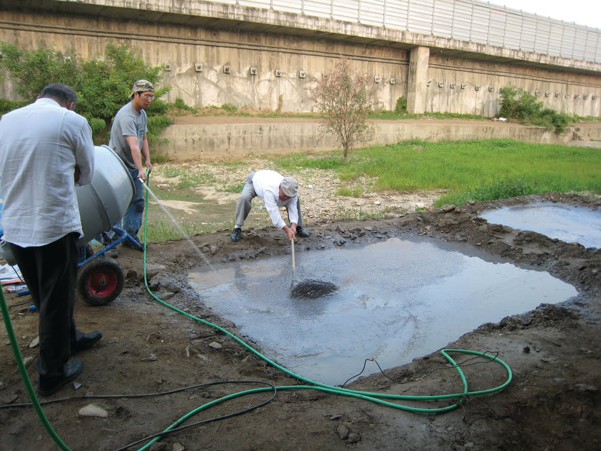
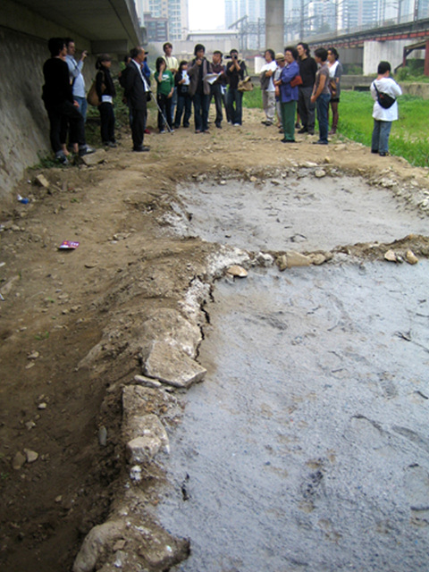
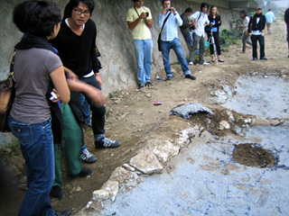

<meta charset="utf-8">
<html lang="ko">
<head>
    <link rel="stylesheet" type="text/css" href="./../style.css" />
    <title></title>
</head>
<body id="tt-body-page" class="">
<div id="wrap" class="wrap-right">
    <div id="container">
        <main class="main ">
            <div class="area-main">
                <div class="area-view">
                    <div class="article-header">
                        <div class="inner-article-header">
                            <div class="box-meta">
                                <h2 class="title-article">"기억으로 재현되는 종이블럭 이야기" 워크숍/윌리엄 수 William Hsu/수암천</h2>
                                <div class="box-info">
                                    <p class="category">2008 석수아트프로젝트</p>
                                    <p class="date">2008-10-19</p>
                                </div>
                            </div>
                        </div>
                    </div>
                    <hr>
                    <div class="article-view">
                        <div class="contents_style">
                            <p data-ke-size="size16"><b>윌리엄&nbsp;수&nbsp;William&nbsp;Hsu</b></span></p>
<p data-ke-size="size16"><b>Collecting Towards a Paper Museum in Anyang</b></span></p>
<p data-ke-size="size16">&nbsp;</p>
<p><figure class="imageblock alignCenter" >
    <span data-lightbox="lightbox">
        
    </span>
    <figcaption></figcaption>
</figure></p>
<p style="text-align: justify;" data-ke-size="size16"><span style=" text-align: start;">He historical significance of Anyang River is one that is hard to gauge with observation alone. Its current landscape is the result of successful environmental restoration with abundant wildlife, un-kept grassy banks and a cycle/pedestrian lane that provides a variety of recreational use for nearby residents. In its recent history, Anyang River played a complex role in Korea's industrial modernisation. In constant to the current idyllic image the river was once nicknamed Korea's dirtiest sewage the ecosystem was devastated and the stream and hanks undesirable for recreational use. Many birds and fish one sees oday had been absent for around 30years.</span></p>
<p data-ke-size="size16">&nbsp;</p>
<p><figure class="imageblock alignLeft" >
    <span data-lightbox="lightbox">
        
    </span>
    <figcaption></figcaption>
</figure><figure class="imageblock alignLeft" >
    <span data-lightbox="lightbox">
        
    </span>
    <figcaption></figcaption>
</figure></p>
<p data-ke-size="size16"><span style=" text-align: justify;">2008년 10월 19일 오후 5시 수암천</span></p>
<p data-ke-size="size16"><span style="text-align: justify;">윌리엄 수의 워크숍 "기억으로 재현되는 종이블럭 이야기"</span><span style="text-align: justify;">&nbsp;</span></p>
                        </div>
                        <br/>
                        <div class="tags">
                            
                        </div>
                    </div>
                </div>
            </div>
        </main>
    </div>
</div>
</body>
</html>
